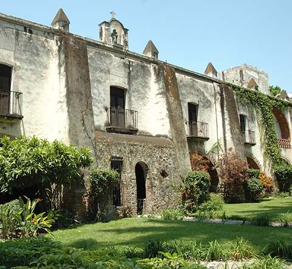

📸 Galería de Imágenes

🏛️ Historia y Reseña Completa
La Hacienda Vista Hermosa fue fundada en 1548 por Hernán Cortés y su hijo Martín Cortés, convirtiéndose rápidamente en uno de los ingenios azucareros más grandes e importantes de la Nueva España. Debido a la gran riqueza que generaba, la propiedad fue construida con una arquitectura fortificada, gruesos muros de piedra, arcos monumentales y un intrincado sistema de pasadizos subterráneos para protegerse de posibles ataques. Durante la Revolución Mexicana, el lugar sirvió como un punto estratégico y fue tomado por las fuerzas zapatistas.
En la actualidad, este imponente conjunto arquitectónico funciona como un hotel de renombre internacional. El complejo ha sabido conservar su aire señorial y colonial, integrando sus antiguas mazmorras, establos y acueductos en una espectacular infraestructura que incluye una inmensa alberca construida debajo de los arcos originales, un lago artificial, lienzos charros, y jardines que transportan a sus visitantes a través del tiempo.